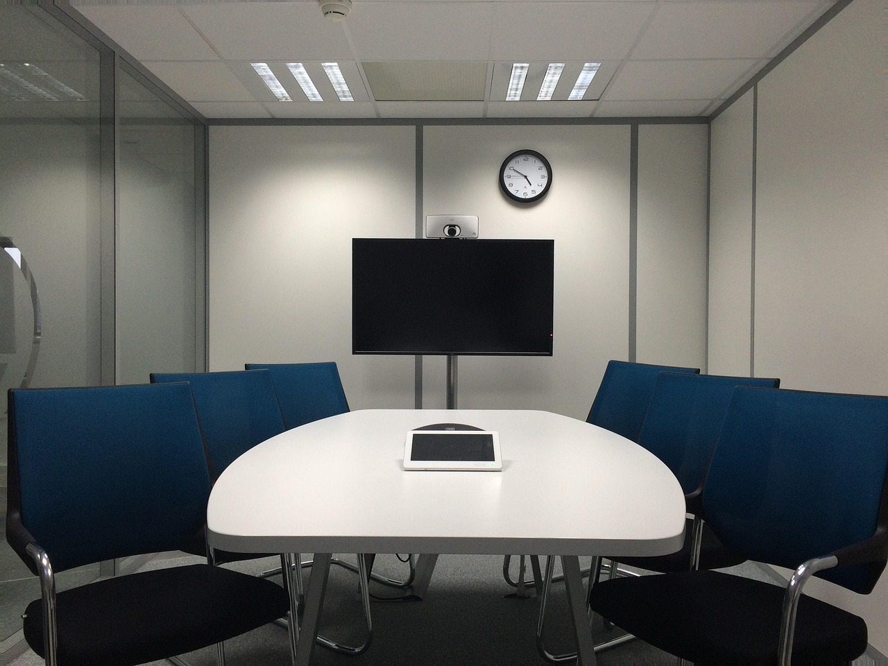
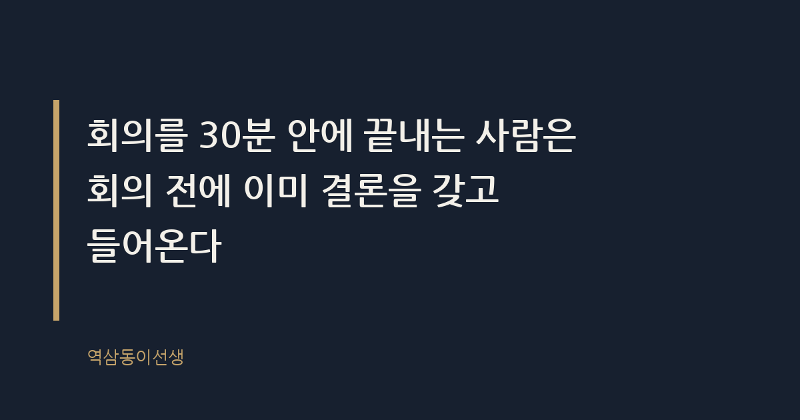
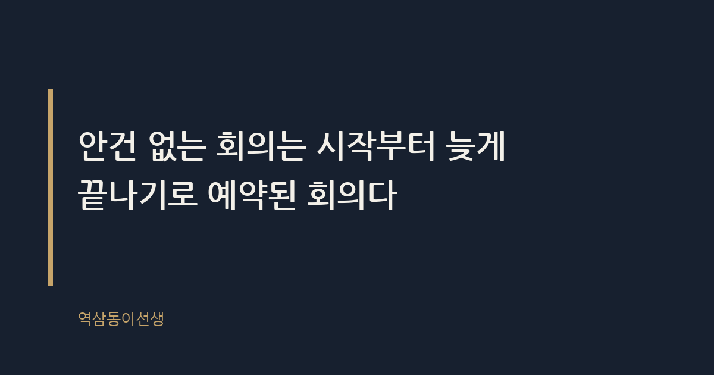

주제 회의를 30분 안에 끝내는 사람들의 공통점 (evergreen / office)
제목 후보
메타 설명 회의를 30분 안에 끝내는 사람들의 공통점을 회의실 장면과 구조적 원인으로 분석하고, 바로 쓸 수 있는 30분 회의 체크리스트를 담았다.
라벨 회의, 회의시간, 직장생활, 회의문화, 업무효율, 스마트워크, 회의30분끝내는법, 회의잘하는사람특징, 짧은회의운영법, 회의안건작성법
실용 자산 체크리스트 — 30분 안에 끝내는 방법을 찾는 도구형 검색 의도이므로 바로 적용할 수 있는 순서형 체크리스트를 넣었다
발행 전 팩트체크
이미지 (Blogger 편집기에 드래그해 넣으세요)



지난주 화요일 오전 9시, 마케팅팀 주간 회의에 들어갔다. 안건은 세 개였다. 예산 승인, 신제품 카피 컨펌, 협력사 미팅 일정 조율. 회의는 47분 만에 끝났다. 그런데 바로 옆 회의실에서는 똑같은 성격의 안건 세 개를 가지고 한 시간 반을 끌고 있었다. 벽 하나를 사이에 두고 이렇게 다를 수 있나 싶었다.
회의를 30분 안에 끝내는 사람들에게는 공통점이 있다. 회의실에 들어오기 전에 이미 결론을 갖고 온다는 것이다. 회의실 안에서 생각을 시작하는 사람과, 생각을 끝내고 결론만 확인하러 들어오는 사람은 말투부터 다르다. 전자는 "음, 그러니까 제 생각에는..."으로 시작하고, 후자는 결론을 먼저 밝히는 문장으로 시작한다.
짧은 회의란 안건 개수만큼 결정이 나는 회의다. 안건이 세 개인데 결정이 하나도 안 나면, 그 회의는 세 시간을 해도 짧은 회의가 아니다. 반대로 안건이 한 개뿐이어도 결정이 나지 않으면 그 10분짜리 회의도 실패한 회의다. 회의 시간의 길이는 결과와 무관하다. 결정의 개수와 관련이 있을 뿐이다.
하버드비즈니스리뷰는 임원들이 일주일에 평균 23시간을 회의에 쓴다고 보고한 바 있다. 문제는 그 시간의 상당수가 '논의'에 쓰이고 '결정'에는 쓰이지 않는다는 점이다. 논의는 늘릴수록 안전해 보이고, 결정은 내릴수록 책임이 따른다. 그래서 사람들은 본능적으로 논의를 연장한다.
예전에 신제품 론칭 회의에 참석자가 열두 명 모인 적이 있다. 본부장, 팀장 셋, 실무자 여덟 명. 안건은 로고 색상 하나였는데 끝나는 데 한 시간 넘게 걸렸다. 사람이 많으면 의견도 많아지고, 의견이 많아지면 그걸 다 들어야 한다는 압박이 생긴다. 사실 그 자리에서 발언한 사람은 네 명뿐이었다. 나머지 여덟 명은 동의도 반대도 하지 않고 자리만 채웠다.
회의가 짧은 조직을 보면 참석자 수부터 다르다. 안건과 직접 관련 없는 사람은 애초에 부르지 않는다. "혹시 몰라서"라는 이유로 불러놓은 사람 한 명이 회의 흐름을 끊는 질문을 던지는 순간, 10분이 순식간에 날아간다. 30분 회의를 만드는 사람은 초대 메일을 보낼 때부터 '이 사람이 이 자리에서 결정에 기여하는가'를 따진다. 기여하지 않는 사람은 참조로 빼고 회의록만 공유한다.
입사 1년 차 때는 회의에 불려 가는 것 자체가 영광이라고 생각했다. 그래서 질문이 없어도 손을 들었고, 할 말이 없어도 뭔가 보태야 할 것 같아서 한마디씩 얹었다. 돌이켜보면 그 한마디들이 회의를 5분씩 늘렸다. 연차가 쌓인 뒤에야 알았다. 회의실에서 가장 어른스러운 태도는 말을 보태는 것이 아니라, 할 말이 없으면 조용히 고개만 끄덕이는 것이었다.
반대로 임원들의 회의를 옆에서 지켜보면 발언 횟수 자체가 적다. 대신 한 번 입을 열면 그 말이 곧 결정으로 이어진다. "그건 B안으로 갑시다"라는 한마디로 20분짜리 논쟁이 정리되는 걸 여러 번 봤다. 말을 아끼는 사람일수록 회의에서 차지하는 발언의 무게가 크다는 걸, 회의실 밖에서는 알기 어렵다.
회의가 길어질 회의인지 아닌지는 시작 3분 안에 안다. 노트북을 펴고 메일을 확인하는 사람이 많으면 그 회의는 안건이 불분명하다는 신호다. 반대로 다들 종이 한 장이나 화면 한 장만 보고 있으면, 사전에 자료가 공유됐고 참석자들이 이미 숙지했다는 뜻이다. 회의 전에 끝낼 수 있는 일을 회의 중에 하고 있으면 회의는 늘어진다.
또 하나 눈에 띄는 신호는 침묵의 길이다. 질문을 던졌을 때 3초 안에 누군가 답하면 그 조직은 결정 구조가 명확한 조직이다. 10초 넘게 서로 눈치를 보면, 그 자리에 의사결정권자가 없거나 모두가 책임을 피하고 있다는 뜻이다. 회의의 속도는 결국 조직의 권한 구조를 그대로 보여주는 거울이다.
자리 배치도 신호다. 사람들이 큰 테이블에 듬성듬성 떨어져 앉으면 그 회의는 발언자와 방관자가 나뉜 회의다. 반면 작은 테이블에 다닥다닥 붙어 앉은 회의는 참석자 전원이 실무에 관여하고 있다는 뜻이고, 대개 더 빨리 끝난다. 물리적 거리가 심리적 거리를 그대로 반영한다.
오전 11시 반에 잡힌 회의와 오후 2시에 잡힌 회의를 비교해보면 전자가 체감상 더 빨리 끝난다. 다들 배가 고프기 때문이라고 웃어넘길 수도 있지만, 실은 '끝나야 하는 시각'이 명확하기 때문이다. 점심시간이라는 물리적 마감이 있으면 사람들은 본능적으로 발언을 압축한다. 반대로 오후 한가한 시간대 회의는 끝나는 시각이 모호해서 늘어지기 쉽다. 회의가 짧아지길 바란다면 일부러 애매한 시간대를 피하고, 다음 일정이 붙어 있는 시간대에 잡는 것도 방법이다.
회의가 길어지는 이유는 참석자들이 결정이 아니라 공감을 찾기 때문이다. "다들 제 의견에 동의하시나요?"라는 질문은 얼핏 민주적으로 들리지만, 실은 책임을 분산시키는 말이다. 동의를 구하는 회의는 끝나지 않는다. 누군가 한 명이라도 다른 의견을 내면 다시 처음으로 돌아가기 때문이다.
로마 원로원은 안건마다 발언 순서와 시간을 엄격히 제한했다고 전해진다. 반면 끝없이 토론을 벌였던 프랑스 혁명 초기의 국민공회는 결정을 내리기까지 지독히 오래 걸렸다는 평가를 받는다. 발언의 자유와 결정의 속도는 종종 반비례한다. 회의도 마찬가지다. 모두에게 충분히 말할 기회를 주는 것과, 정해진 시간 안에 결론을 내는 것은 다른 문제다.
화상회의로 바뀌면서 회의는 오히려 더 길어졌다는 체감이 있다. 접속하자마자 "저 잘 들리나요", "화면 공유가 안 되는데요" 하는 데만 5분이 나간다. 대면 회의였다면 생략됐을 잡음이 온라인에서는 매번 반복된다. 게다가 화면 너머로는 누가 발언하려는지 타이밍을 잡기가 어렵다. 말이 겹치고, 양보하고, 다시 겹치는 사이 침묵이 쌓인다.
짧게 끝내는 사람은 온라인 회의일수록 더 엄격하게 안건을 관리한다. 화면 공유 자료 첫 장에 안건과 종료 예정 시각을 적어 둔다. 채팅창으로 의견을 먼저 받고, 발언은 결론이 갈리는 지점에서만 요청한다. 온라인 회의는 대면보다 비언어적 신호가 적기 때문에, 진행자가 구조를 더 명시적으로 짜야 짧게 끝난다.
"오늘 논의할 게 많습니다"로 시작하는 사람과 "오늘 안건은 세 개입니다"로 시작하는 사람은 완전히 다른 회의를 만든다. 숫자가 있으면 참석자는 속도를 가늠한다. 숫자가 없으면 무한정 늘어질 수 있다고 무의식적으로 받아들인다.
회의가 끝날 무렵 "이건 팀장님이 결정하셔야 할 것 같은데요"라는 말이 나오면 그 회의는 실패한 회의다. 30분 만에 끝내는 사람은 회의 시작 전에 이미 "이 안건은 누가 최종 결정권자인가"를 확인해 둔다. 결정권자가 그 자리에 없으면 회의 자체를 열지 않는다.
말을 많이 하는 사람이 회의를 주도하는 것 같지만, 실제로 회의를 빨리 끝내는 사람은 말을 적게 한다. 핵심만 짧게 말하고, 나머지는 질문으로 넘긴다. "A안으로 가시죠, 이유는 세 가지입니다"라고 말하는 사람과, 그 세 가지 이유를 설명하느라 10분을 쓰는 사람은 같은 결론에 도달해도 걸리는 시간이 다르다.
회의가 궤도를 벗어나려는 순간을 감지하는 것도 능력이다. "그 얘기는 흥미로운데, 오늘 안건과는 별개로 다뤄볼까요"라는 한마디는 상대의 말을 끊지 않으면서도 흐름을 되찾는다. "지금 몇 분 남았는지 한번 볼까요"라는 말도 효과적이다. 시계를 직접 언급하는 순간 사람들은 자기 발언을 압축하기 시작한다. 말을 끊는 사람이 아니라 시간을 보여주는 사람이 회의를 짧게 만든다.
의외로 회의 시간을 가장 많이 줄이는 건 회의 전이 아니라 회의 후의 습관이다. 회의가 끝나자마자 결정 사항 세 줄을 정리해서 단체 채팅방에 올리는 사람이 있는 조직은, 다음 회의가 짧아진다. 지난번에 뭘 결정했는지 다시 설명하는 데 쓰는 시간이 사라지기 때문이다. 반대로 회의록이 없는 조직은 매번 "지난번에 뭐로 결론 났었죠"를 확인하는 데만 10분을 쓴다. 같은 안건을 세 번째 회의에서 또 꺼내는 민망한 상황도 회의록 한 장이면 막을 수 있다.
회의록이란 결정을 기록해서 다음 회의의 출발선을 당겨주는 문서다. 길게 쓸 필요도 없다. 날짜, 참석자, 결정 사항, 담당자, 다음 확인 일정. 이 다섯 줄이면 충분하다. 회의를 짧게 끝내는 사람들은 이 다섯 줄을 회의가 끝나기 전, 그 자리에서 함께 확인하고 나간다.
30분 안에 끝나는 회의를 몇 번 겪으면 묘한 신뢰가 생긴다. '이 사람과 일하면 시간을 낭비하지 않는다'는 감각이다. 반대로 매번 한 시간 반씩 끌리는 회의가 반복되면, 안건과 무관하게 그 조직 전체에 대한 피로감이 쌓인다. 회의 시간만 봐도 그 조직의 평판이 드러난다. 씁쓸하면서도 꽤 정확한 진실이다.
Q. 분명 안건 하나였는데 한 시간 넘게 끌린 회의, 겪어본 적 있으신가요?